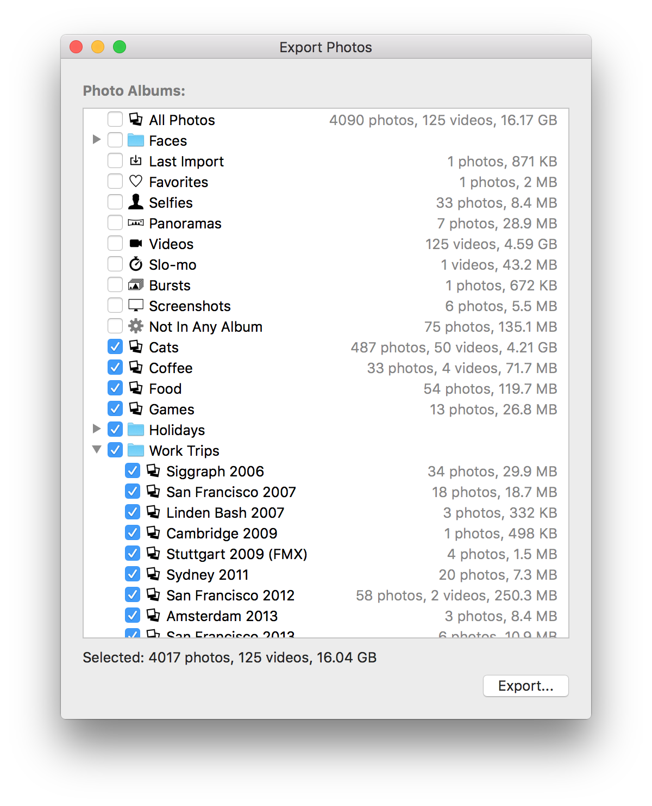

PhotosExport
PhotosExport bulk exports your Photos.app data to any folder you choose, for easy backup, sharing or migration.
While using iCloud Photo Library is fine, sometimes it's nice just to be able to export a folder full of photos & videos which is completely platform-agnostic, yet still respects the albums, folders and titles you've defined inside Photos.app.
PhotosExport presents you with your albums in the same structure you see them in Photos.app, letting you choose which ones to export.

Oh hey, that's like PhoShare right?
Yep, I was a big user of PhoShare to bulk export/back up my iPhoto data, but not only was it a little fiddly and a bit long in the tooth, it doesn't support Photos.app and has basically been abandoned. Personally I really like being able to dump my photos & videos on a NAS for backup / posterity without it being dependent on the Mac-specific metadata, so I wrote a new tool.
Features
It behaves mostly as you'd expect (hopefully):
- Supports photos and videos
- Folders and album become directories
- Item titles are used as file names if supplied, if not the original file name is used
- Automatically detects duplication of file names during export & appends _1, _2 etc to make unique
- Checks file sizes and modification times to avoid exporting content that already exists, so incremental exports work
- Remembers what you selected across restarts
- New albums not seen before are defaulted to being exported, system-generated ones like Faces, Slo-Mo are not
- Exports edited versions as a preference and originals otherwise
- Multi-select rows & toggle with either mouse or Spacebar
NO WARRANTY
This is just something I hacked together in a few hours that I'm publishing for free. Use it at your own risk, and don't complain to me if it misbehaves. I'll probably keep improving it since I need it myself, but I can't promise anything. I also can't promise that it won't have horrid bugs that lead to it filling up your hard drive or eloping with your significant other.
Download
PhotosExport 0.3TODO
- Sorting options (currently ordering is identical to Photos)
- Add option: export originals (currently exports edited versions if present)
- Add option: skip duplicates (photo in multiple albums) or symlink
- Expose command line interface for scheduled running
Image Credits
- Video Camera by Mike Arndt from the Noun Project
- import by ChangHoon Baek from the Noun Project
- Heart by Okan Benn from the Noun Project
- Thunderbolt screen by Samy Menai from the Noun Project
- timer by useiconic.com from the Noun Project
- panorama by Francisca Arévalo from the Noun Project
- Slideshow by Ralf Schmitzer from the Noun Project